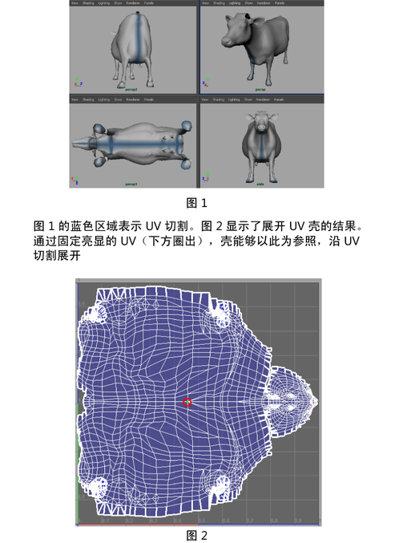

以下最佳做法有助于成功完成展开操作：
|
切记映射 UV 纹理坐标 |
您可以使用任何 UV 映射技术创建 UV。UV 的初始形状应没有任何扭曲，以避免展开时的计算时间过长，并帮助选择要切割的 UV 边。请参见映射 UV。 |
|
制定切割计划 |
制定切割计划，以获取最佳的展开结果。切割越好，原始网格及其对应的 UV 壳之间的相关性越佳。预计该切割将导致沿边的纹理不一致，并找到模型上可见性最差的边。例如，在角色的手臂下或腿的背面进行切割。 
|
|
考虑要固定的 UV |
固定的 UV 将提供一个定位点，其他 UV 可围绕该定位点展开。如果展开 UV 壳时未固定任何 UV，则壳可能展开成为非常细小的网格或展开的形状并非是我们想要的形状。对于对称网格，沿对称线固定 UV 可保持壳的形状。 注： 仅当使用“旧版”(Legacy)展开“方法”(Method)（请参见“展开 UV 选项”(Unfold UVs Options)）时，固定选项才可用。“展开工具”(Unfold Tool)和 Unfold3D 展开“方法”(Method)会自动固定未选定的 UV。请参见展开 UV 网格。
|
|
展开多个网格 |
对于复杂的网格，可以将网格切割为更小部分，并将每个部分展开为单独的 UV 壳。您甚至可以在展开过程中启用“排布 UV”(Layout UVs)，以在栅格中自动排列壳（请注意，这将重用当前的排布 UV 选项(Layout UV options)）。 虽然这种方法可以提供更好的控制，但您需要提前制定计划，确定何处可以安全切割网格和重新缝合 UV（如果需要）。 |
|
创建“快速选择集”(Quick Select Sets) |
在您需要重复选择 UV 进行固定时，创建“快速选择集”(Quick Select Sets)（创建 > 集 > 快速选择集(Create > Sets > Quick Select Set)）。 |
|
亮显纹理边界 |
在场景和 UV 编辑器中查看并选择边界边，这一点至关重要。通过选择，可以启用纹理边界的显示。这会将多边形网格上的 UV 边界显示为较粗的线，以便您在切割 UV 时可以查看进度。 |
|
约束展开方向 |
默认情况下，UV 以不受限制的方式沿所有方向展开。可以约束展开过程，以便约束 UV 显示在 UV 编辑器的 2D 视图中时沿垂直方向或水平方向展开。如果 UV 的外观在某一方向上十分良好、但在另一方向上还需优化，则该选项十分有用。 注： 使用“展开工具”(Unfold Tool)时，通过在按住 Shift 键的同时拖动鼠标，可以约束展开操作的方向。
|
|
对齐 UV |
使用“UV 工具包”(UV Toolkit)的“对齐和捕捉”(Align & Snap)选项可以捕捉 UV，从而匹配纹理上自然出现的任何垂直线或水平线。请参见对齐 UV 选项(Align UVs options)。 提示： 可对齐沿对称轴的 UV 边。例如，可选择并对齐对称的四足动物脊椎上的 UV 线。然后固定它们，使它们成为后续展开操作的基准。
|
|
使用“UV 晶格工具”(UV Lattice Tool) |
使用“UV 晶格工具”(UV Lattice Tool)，可以在执行后续“展开”(Unfold)操作之前修改 UV 壳的区域。 |